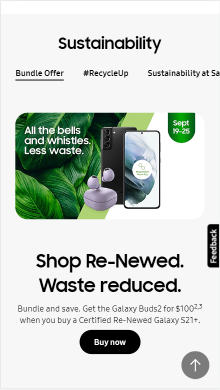
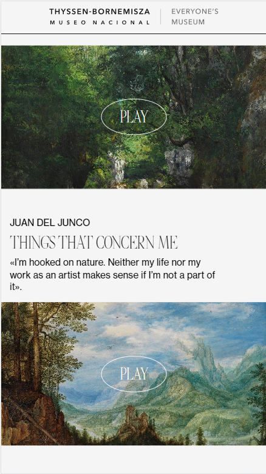
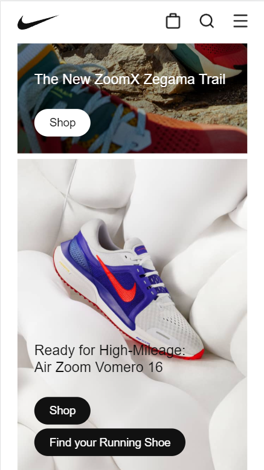

Design Principles
Tim Orgill
Contrast
Samsung
Samsung (links to external site)
This snip from Samsung exemplifies contrast because of the green foliage on a solid white background. This effectively brings attention to the product they are trying to sell.
White Space and Clean Design
Thyssen-Bornemisza
Thyssen-Bornemisza (links to external site)
By using plenty of white space, the picture and text are sufficiently spaced to allow great user readability.
Repetition
Nike
Nike (links to external site)
Nike used repetition by keeping the images the same size and a bubble with the word "Shop" is used consistently throughout the product gallery.